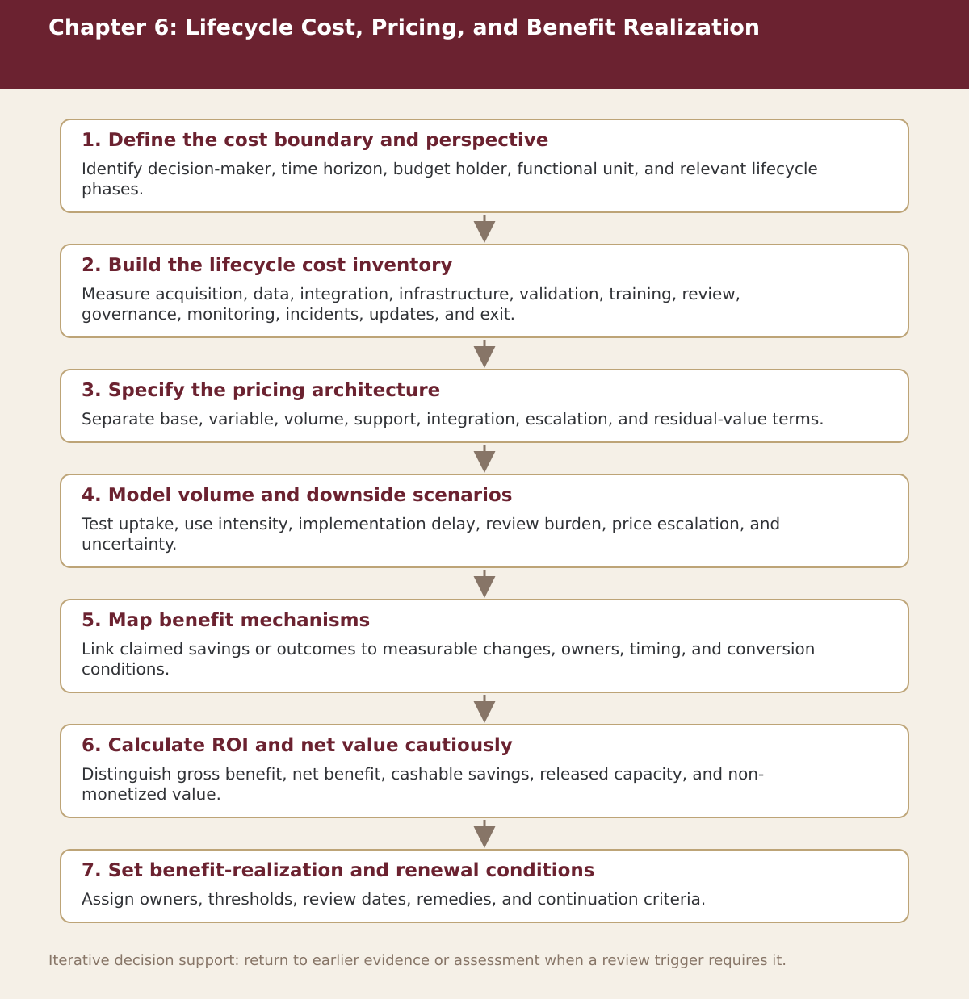

Chapter 6
Lifecycle Cost, Pricing, and Benefit Realization
Chapter-level process map linking the chapter’s decision questions to the companion resources and decision gates.

Process steps
| Step | Stage | Purpose | Required Input | Expected Output | Decision Or Gate |
|---|---|---|---|---|---|
| 1 | Define the cost boundary and perspective | Identify decision-maker, time horizon, budget holder, functional unit, and relevant lifecycle phases. | Local evidence and the prior approved step | Versioned record for: Define the cost boundary and perspective | Proceed, revise, escalate, restrict, or stop as appropriate |
| 2 | Build the lifecycle cost inventory | Measure acquisition, data, integration, infrastructure, validation, training, review, governance, monitoring, incidents, updates, and exit. | Local evidence and the prior approved step | Versioned record for: Build the lifecycle cost inventory | Proceed, revise, escalate, restrict, or stop as appropriate |
| 3 | Specify the pricing architecture | Separate base, variable, volume, support, integration, escalation, and residual-value terms. | Local evidence and the prior approved step | Versioned record for: Specify the pricing architecture | Proceed, revise, escalate, restrict, or stop as appropriate |
| 4 | Model volume and downside scenarios | Test uptake, use intensity, implementation delay, review burden, price escalation, and uncertainty. | Local evidence and the prior approved step | Versioned record for: Model volume and downside scenarios | Proceed, revise, escalate, restrict, or stop as appropriate |
| 5 | Map benefit mechanisms | Link claimed savings or outcomes to measurable changes, owners, timing, and conversion conditions. | Local evidence and the prior approved step | Versioned record for: Map benefit mechanisms | Proceed, revise, escalate, restrict, or stop as appropriate |
| 6 | Calculate ROI and net value cautiously | Distinguish gross benefit, net benefit, cashable savings, released capacity, and non-monetized value. | Local evidence and the prior approved step | Versioned record for: Calculate ROI and net value cautiously | Proceed, revise, escalate, restrict, or stop as appropriate |
| 7 | Set benefit-realization and renewal conditions | Assign owners, thresholds, review dates, remedies, and continuation criteria. | Local evidence and the prior approved step | Versioned record for: Set benefit-realization and renewal conditions | Proceed, revise, escalate, restrict, or stop as appropriate |